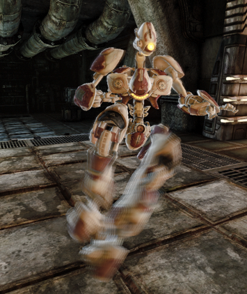
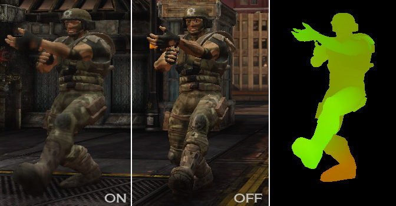
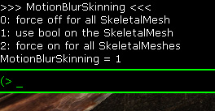
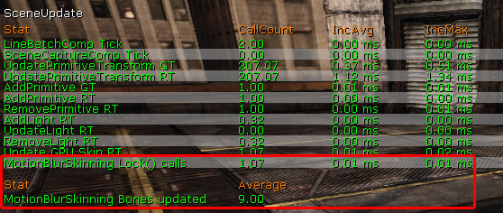

UDN
Search public documentation:
MotionBlurSkinning
日本語訳
中国翻译
한국어
Interested in the Unreal Engine?
Visit the Unreal Technology site.
Looking for jobs and company info?
Check out the Epic games site.
Questions about support via UDN?
Contact the UDN Staff
中国翻译
한국어
Interested in the Unreal Engine?
Visit the Unreal Technology site.
Looking for jobs and company info?
Check out the Epic games site.
Questions about support via UDN?
Contact the UDN Staff
UE3 Home > Post Process Effects > MotionBlur Skinning Post Process Feature
UE3 Home > Cinematic Artist > MotionBlur Skinning Post Process Feature
UE3 Home > Cinematic Artist > MotionBlur Skinning Post Process Feature
MotionBlur Skinning Post Process Feature
|  |
| Body parts moving in different directions show different motion blur direction and strength. |
Overview
|  |
| Left: feature off Middle: feature on Right: Per pixel velocity shown as color. |
Activate the feature
|  |
| Response when using the MotionBlurSkinning console command. |
Setting the SkeletalMesh flag
Implementation
Limited bone count
As we use a 1D texture to store the bone data there are limits on the bone count. We currently use a 4096 wide texture and need to store 3 texels per bone. Use the stat SceneUpdate command to see if this limit affects you. We do motion blur only for nearby objects and with the bone count we use we haven't seen this being an issue. Note that motion blur for facial animation often doesn't require the MotionBlurSkinning feature.Shader permutation
We tried to avoid the shader permutation for having skinned motion blur and not having it. This was mostly to keep code complexity low but also to have less shaders in general. We decided to use static branching (compare on bool shader constant) as this solves the problem and is optimized out by the driver. On Xbox360 we use static branching to avoid a shader permutation. We verified, this is as fast as compiled out. Other platforms don't make use of this yet (see Optimizations section).Performance
CPU data update
The CPU cost of skinned motion blur is not high as the data from former frames is stored and reused for the following frame. The texture lock operation should not stall as we only double buffer but to make sure we have a stat on this. By using the console command stat SceneUpdate you can look at this number.|  |
| The statistics show the CPU time for the lock and the amount of bones that have been updated. |
More draw calls
Motion blurred object need to be rendered in the velocity rendering pass (to store the per pixel motion vector). For non skinned motion blur we only need to do this if there is object motion. To test if a skinned object has no motion we would need to check much more data. We don't do this optimization yet. It can be done but it won't help the worst case of many moving object. That means when enabling the skinned motion blur for an object that was not moving (e.g. bot not moving) it now needs to be rendered and that adds more draw calls.Vertex texture fetch GPU cost
The current method requires 12 vertex texture fetches into a very big vertex format (4 floats for one bone 4x3 matrix, 4 bones for skinning). This means the more vertices need to be rendered this way the slower it renders. Only nearby objects get rendered this way (velocity rendering pass) so the render cost might peak up with a lot of nearby action. When profiling the velocity rendering pass on Xbox360 (dense triangle meshes with morph) we noticed the rendering being 60% slower than with rigid motion blur (all objects moved and therefore rendering cannot be skipped).Memory
Support on different platforms
Optimizations:
- On Xbox360 the "vfetch" feature can be used instead of the vertex texture fetch.
- We could do less than 4 bone lookups per vertex (degrades quality but might be acceptable).
- We could check the bPerBoneMotionBlur at runtime to allow game code to disable when it knows the objects is not moving (Simple but requires effort on game code to be useful).
- Utilize static branching on PC and Playstation 3. We have an engine bug that prevents us from using that. As a workaround we check the state of a float to disable the feature (means even non skinned objects pay the cost of the heavy shader in the velocity rendering pass).
- We currently lock the whole texture even if only part of it is used.
- Test if velocity rendering is needed by comparing all bones against the former ones.
Useful console commands
-
MotionBlurSkinning - as described above